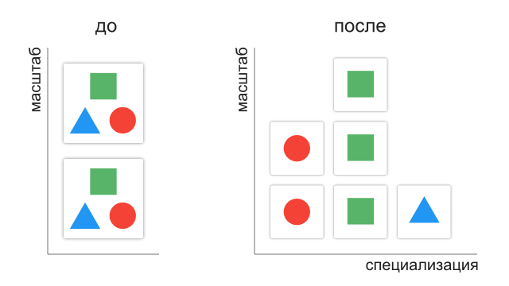
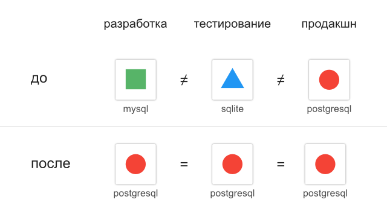
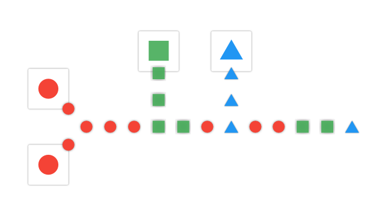

12-факторные приложения
готовимся к масштабу и микросервисам
Денис Потапов
The Twelve-Factor App
12factor.net
bit.ly/12factor-ua
12-факторные приложения
современное веб приложение от heroku
- подключение новых разработчиков к проекту
- переносимость между средами выполнения
- непрерывное развертывание
12-факторные приложения
современное веб приложение от heroku
- работа на современных облачных платформах
- масштабироваться без изменений
- deis, fortrabbit
- docker
I
Кодовая база
Codebase
I. Один репозиторий — множество развертываний
- система контроля версий
- приложение — один репозиторий
- несколько репозиториев — распределенная система
- общий код — библиотека
I. Один репозиторий — множество развертываний

II
Зависимости
Dependencies
II. Явные и изолированные зависимости
- системные пакеты
- пакеты приложения («vendoring»)
- зависимости приложения явные
II. Явные и изолированные зависимости
- декларация зависимостей
- изоляция зависимостей
- только совместное использование
- даже для «обычных» пакетов (curl, ImageMagic)
II. Явные и изолированные зависимости
| декларация | изоляция | |
|---|---|---|
| NodeJS | NPM | NVM |
| Ruby | Gem Bundler | Gem Bundler, RVM |
| PHP | Composer | ? |
III
Конфигурация
Config
III. Конфигурация — свойства среды выполнения
Cтрогое разделения конфигурации и кода:
- конфигурация меняется между развёртывания (БД, сторонние службы, API)
- код не меняется (маршруты, контроллеры)
- код можно опубликовать без компроментации
III. Конфигурация — свойства среды выполнения
Константы в коде
Конфигурационные файлы (config/database.yml):
- сохранить в коде по ошибке
- разные форматы и места
- специфичны для языка и фреймворка
III. Конфигурация — свойства среды выполнения
Конфигурация в переменных окружения (env vars)
// PHP
$dbHost = getenv('DB_HOST');
// Ruby
ENV["MY_CONFIG"]
- все настройки собранны в одном месте
- не зависят от языка
III. Конфигурация — свойства среды выполнения
Группировка конфигураций (development, test, production)
- рост количества (staging, qa)
- поддержка
- каждая переменная независима
IV
Сторонние службы
Backing Services
IV. Локальные и сторонние службы

IV. Локальные и сторонние службы
Код не делает различий между локальными и сторонними службами
- замена локального на сторонний (SMTP, DB)
- расположение и учетные данные в конфигурации
- ресурс можно отключать и подключать
V
Сборка, релиз, выполнение
Build, release, run
V. Строгое разделение сборки, релиза и выполнения

V. Строгое разделение сборки, релиза и выполнения
- сборка может быть сложной
- нельзя внести изменения в релиз
- релизы с идентификатором
- возможность откатить релиз
- выполнение должно быть простым
VI
Процессы
Processes
VI. Приложение – набор процессов
- не сохраняют внутреннее состояние (stateless)
- не имеют разделяемых данных (share-nothing)
- следующий запрос — другому процессу
VI. Приложение – набор процессов
- данные пользователя в БД
- упаковка ресурсов (asset) на этапе сборки
- сессии в хранилище (Memcached, Redis)
VII
Привязка портов
Port binding
VII. Приложение не зависит от сервера
Приложение в контейнере веб-сервера
- PHP в Apache HTTPD
- Java в Tomcat
VII. Приложение не зависит от сервера
Приложение 12 факторов экспортирует HTTP сервис
- объявление зависимости:
- Tornado в Python
- Thin в Ruby
- Jetty в Java
- ReactPHP в PHP
- может выступать сторонней службой
VIII
Конкурентность
Concurrency
VIII. Масштаб с помощью процессов
VIII. Масштаб с помощью процессов
- процессы — сущности первого класса
- различная нагрузка — разные типы процессов
- отсутствие разделяемых данных при масштабе
VIII. Масштаб с помощью процессов
Выполняйте, а не запускайте, процессы
Run not start
- контроль выполнения
- маршрутизация вывода
- реагирование на падение
IX
Одноразовость
Disposability
IX. Быстрый запуск и корректное завершение
- минимальное время запуска
- корректное завершение
- устойчивые к падению
IX. Быстрый запуск и корректное завершение
- короткие HTTP запросы
- фоновые задачи возвращать в очередь
- повторная входимость (транзакции)
X
Паритет разработки/работы
Dev/prod parity
X. Приблизьте разработку к развертыванию
разное времяразные людиразные инструменты
X. Приблизьте разработку к развертыванию
- одно время
- одни люди
- одни интсрументы
X. Приблизьте разработку к развертыванию
X. Приблизьте разработку к развертыванию
адаптеры (ActiveRecord, Celery)
- высокая стоимость несовместимости
- простота установки сторонних служб (Chef, Puppet, Vagrant …)
- адаптеры только для портирования
XI
Журналирование
Logs
XI. Журнал в stdout
Журнал – это поток событий всех сервисов
Приложение не хранит и не перенаправляет журнал
Журнал без буферизации в stdout
XI. Журнал в stdout
XI. Журнал в stdout
Индексация и анализ журналов
Splunk, Loggly, Hadoop/Hive
- поиск
- тренды
- оповещения
XII
Процессы администрирования
Admin processes
XII. Процессы администрирования
- миграции
- консоль
- разовые скрипты
XII. Процессы администрирования
Запуск на уровне релиза
- кодовая база
- конфигурация
- зависимости
12-факторные приложения
- Один репозиторий — множество развертываний
- Явные и изолированные зависимости
- Конфигурация — свойства среды выполнения
- Локальные и сторонние службы
- Строгое разделение сборки, релиза и выполнения
- Приложение – набор процессов
12-факторные приложения
- Приложение не зависит от сервера
- Масштаб с помощью процессов
- Быстрый запуск и корректное завершение
- Приблизьте разработку к развертыванию
- Журнал в stdout
- Процессы администрирования